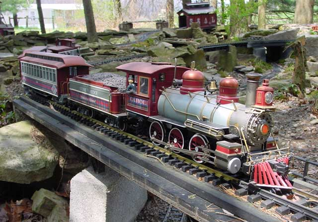

Page 5
The
"Highlander" passenger train is complete! This is
the "varnish" of the Stonehedge & Shadypines
railroad! The locomotive and all the cars are
named after special Ladies in the railroad family.
Locomotive #1 is named "Carol" after the
President of the railroad's wife.
The Power Car is named after Favorite
Cousin Lynne.
Passenger coach "Kelly", named after the
President's daughter.
Open excursion car "Debbie", named after
the president's
daughter in law.
And caboose/observation car "Terri",
named after the President's
sister in law.
Spring 2005
Year 5.
The Stone Hedge shop
crew had a very busy construction season over the
winter of 2004/2005. The mainline gets shut down every winter
between November and April, because of the severe local
winters..snowdrifts 60 feet tall are not uncommon!
not to mention thousands of 10 foot long
pineneedles and oak leaves 15 feet long blocking
the tracks.. and severe cold for months on end..
So every winter the crew retreats to the
shop buildings and works on equipment for the
coming season.
May 2005.
Getting ready for the Summer operating
season, all
the
rolling stock and structures are rolled out of the
shops and onto the railroad.
(yes, you read that right..structures
are rolled out of the shops! ;)
The new Climax works the mine spur.
The stonehedge shops got two ancient
derelict "General" 4-4-0 locomotives.
they were in many pieces and beyond
repair.
the shop crew used the servicable pieces
from the two locomotives
to construct a Heisler and a Climax
locomotive.

the diesel shunter spots a car at the
sand house.
(this is the only diesel on the line.)
Overview of the engine service
facilities.
enginehouse, coaling tower, watertank,
and sand house.
The Black Diamond mine is on the hill
above.
(looks like the engine house shifted
over the winter! ;)
the crew can easily fix that..)
you can still see some of those giant
mutant 15 foot oak leaves.
the crew has quite a time clearing the
mainline of those every spring.
A new mill and house were built over the
winter.
the dry stream bed below the mill might
be filled with water this season.

The Stone Hedge shops did some more
modifications to Locomotive #1's
pilot truck this winter.
when the locomotive arrived from the
builder 4 years ago, the pilot truck
gave no end of trouble to the railroad.
it would derail every 100 feet.
the shops tried a modification to the
truck that it read about in the trade
publications, and that helped, but the pilot truck
still derailed a lot..
so finally this past winter the shop
crew went all-out and fixed the problem once and
for all! the
pilot truck will NEVER derail again!
The railroad is VERY happy with this
modification..
The new heisler takes a work train
across one of the railroad's many trestles.
The heisler is the 2nd locomotive built
from the remains of the two "General" 4-4-0's.
the rest of the heisler's work train.
the heisler, the ballast hopper, and
crane with its work flatcar, were all
"home built" in the railroad's shops.
Only the caboose was bought from an
outside builder.
The new snowplow!
the crew just felt like building a
snowplow, even if the railroad doesnt run
in the snow! 
the snowplow was
constructed from a German boxcar.
It originally looked like this:
The railroad heard
rumours that German boxcars of this type are often
prized
by railroad collectors who go to great
lengths to make sure they stay in absolute
pristine condition.
Often,
amazingly, the presidents of other railroads will
purchase these German cars and then *never* run them on the
railroad! but instead keep them locked away
deep in the shops and often never even
unpack them from their shipping crates.
The stonehedge crew can see no point in
that, and has no issues with heavily modifying
any equipment, regardless of its origin.
this snowplow is named the "Bodine plow"
in honor of the man who gave the
original German boxcar to the railroad.
The new Porter works the coaling
tower lead.

a new turntable is under construction.
a 3-stall roundhouse will also be built
soon.
Dad works on a new
mine lead.
The Stonehedge station also
underwent heavy renovations this winter.
It was also moved to the other side of
the mainline, and recieved a new fondation.
(still under construction)
(notice the drivers from those two
wrecked "General" locomotives!)
a new roof was built between the first
and second floors. Inspired by the nearby Lehigh Valley
Sayre station:
Here is the
station in its as-built configuration:
back in 2003.
The station today.
Summer 2005
Year 5, Continued.
The Railroad is just
about complete!
the shops are built, and the railroad has reached
its zenith.
To next page
|